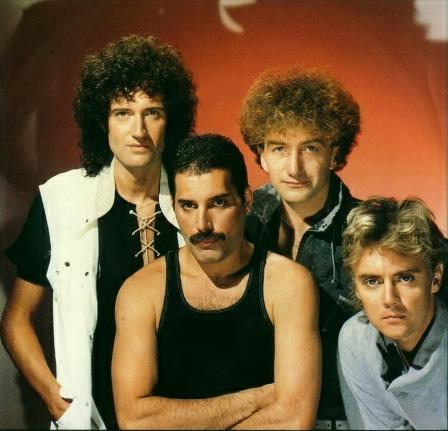

Queen
A Queen brit rockegyüttes, amelynek tagjai Freddie Mercury, Brian May, John Deacon és Roger Taylor voltak.
Jellegzetességeik az aprólékos stúdiómunkával felvett albumok, és a rétegezett, hangsúlyozott gitár- és
énekhangzás.

Íme néhány daluk:
Bohemian Rhapsody
Another One Bites The Dust
The Show Must Go On
Don't Stop Me Now